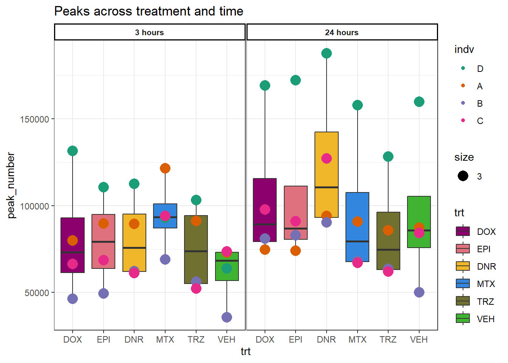

Supplemental Figures 1-11
Renee Matthews
2025-02-26
Last updated: 2025-05-01
Checks: 7 0
Knit directory: ATAC_learning/
This reproducible R Markdown analysis was created with workflowr (version 1.7.1). The Checks tab describes the reproducibility checks that were applied when the results were created. The Past versions tab lists the development history.
Great! Since the R Markdown file has been committed to the Git repository, you know the exact version of the code that produced these results.
Great job! The global environment was empty. Objects defined in the global environment can affect the analysis in your R Markdown file in unknown ways. For reproduciblity it’s best to always run the code in an empty environment.
The command set.seed(20231016) was run prior to running
the code in the R Markdown file. Setting a seed ensures that any results
that rely on randomness, e.g. subsampling or permutations, are
reproducible.
Great job! Recording the operating system, R version, and package versions is critical for reproducibility.
Nice! There were no cached chunks for this analysis, so you can be confident that you successfully produced the results during this run.
Great job! Using relative paths to the files within your workflowr project makes it easier to run your code on other machines.
Great! You are using Git for version control. Tracking code development and connecting the code version to the results is critical for reproducibility.
The results in this page were generated with repository version a197856. See the Past versions tab to see a history of the changes made to the R Markdown and HTML files.
Note that you need to be careful to ensure that all relevant files for
the analysis have been committed to Git prior to generating the results
(you can use wflow_publish or
wflow_git_commit). workflowr only checks the R Markdown
file, but you know if there are other scripts or data files that it
depends on. Below is the status of the Git repository when the results
were generated:
Ignored files:
Ignored: .RData
Ignored: .Rhistory
Ignored: .Rproj.user/
Ignored: data/ACresp_SNP_table.csv
Ignored: data/ARR_SNP_table.csv
Ignored: data/All_merged_peaks.tsv
Ignored: data/CAD_gwas_dataframe.RDS
Ignored: data/CTX_SNP_table.csv
Ignored: data/Collapsed_expressed_NG_peak_table.csv
Ignored: data/DEG_toplist_sep_n45.RDS
Ignored: data/FRiP_first_run.txt
Ignored: data/Final_four_data/
Ignored: data/Frip_1_reads.csv
Ignored: data/Frip_2_reads.csv
Ignored: data/Frip_3_reads.csv
Ignored: data/Frip_4_reads.csv
Ignored: data/Frip_5_reads.csv
Ignored: data/Frip_6_reads.csv
Ignored: data/GO_KEGG_analysis/
Ignored: data/HF_SNP_table.csv
Ignored: data/Ind1_75DA24h_dedup_peaks.csv
Ignored: data/Ind1_TSS_peaks.RDS
Ignored: data/Ind1_firstfragment_files.txt
Ignored: data/Ind1_fragment_files.txt
Ignored: data/Ind1_peaks_list.RDS
Ignored: data/Ind1_summary.txt
Ignored: data/Ind2_TSS_peaks.RDS
Ignored: data/Ind2_fragment_files.txt
Ignored: data/Ind2_peaks_list.RDS
Ignored: data/Ind2_summary.txt
Ignored: data/Ind3_TSS_peaks.RDS
Ignored: data/Ind3_fragment_files.txt
Ignored: data/Ind3_peaks_list.RDS
Ignored: data/Ind3_summary.txt
Ignored: data/Ind4_79B24h_dedup_peaks.csv
Ignored: data/Ind4_TSS_peaks.RDS
Ignored: data/Ind4_V24h_fraglength.txt
Ignored: data/Ind4_fragment_files.txt
Ignored: data/Ind4_fragment_filesN.txt
Ignored: data/Ind4_peaks_list.RDS
Ignored: data/Ind4_summary.txt
Ignored: data/Ind5_TSS_peaks.RDS
Ignored: data/Ind5_fragment_files.txt
Ignored: data/Ind5_fragment_filesN.txt
Ignored: data/Ind5_peaks_list.RDS
Ignored: data/Ind5_summary.txt
Ignored: data/Ind6_TSS_peaks.RDS
Ignored: data/Ind6_fragment_files.txt
Ignored: data/Ind6_peaks_list.RDS
Ignored: data/Ind6_summary.txt
Ignored: data/Knowles_4.RDS
Ignored: data/Knowles_5.RDS
Ignored: data/Knowles_6.RDS
Ignored: data/LiSiLTDNRe_TE_df.RDS
Ignored: data/MI_gwas.RDS
Ignored: data/SNP_GWAS_PEAK_MRC_id
Ignored: data/SNP_GWAS_PEAK_MRC_id.csv
Ignored: data/SNP_gene_cat_list.tsv
Ignored: data/SNP_supp_schneider.RDS
Ignored: data/TE_info/
Ignored: data/TFmapnames.RDS
Ignored: data/all_TSSE_scores.RDS
Ignored: data/all_four_filtered_counts.txt
Ignored: data/aln_run1_results.txt
Ignored: data/anno_ind1_DA24h.RDS
Ignored: data/anno_ind4_V24h.RDS
Ignored: data/annotated_gwas_SNPS.csv
Ignored: data/background_n45_he_peaks.RDS
Ignored: data/cardiac_muscle_FRIP.csv
Ignored: data/cardiomyocyte_FRIP.csv
Ignored: data/col_ng_peak.csv
Ignored: data/cormotif_full_4_run.RDS
Ignored: data/cormotif_full_4_run_he.RDS
Ignored: data/cormotif_full_6_run.RDS
Ignored: data/cormotif_full_6_run_he.RDS
Ignored: data/cormotif_probability_45_list.csv
Ignored: data/cormotif_probability_45_list_he.csv
Ignored: data/cormotif_probability_all_6_list.csv
Ignored: data/cormotif_probability_all_6_list_he.csv
Ignored: data/datasave.RDS
Ignored: data/embryo_heart_FRIP.csv
Ignored: data/enhancer_list_ENCFF126UHK.bed
Ignored: data/enhancerdata/
Ignored: data/filt_Peaks_efit2.RDS
Ignored: data/filt_Peaks_efit2_bl.RDS
Ignored: data/filt_Peaks_efit2_n45.RDS
Ignored: data/first_Peaksummarycounts.csv
Ignored: data/first_run_frag_counts.txt
Ignored: data/full_bedfiles/
Ignored: data/gene_ref.csv
Ignored: data/gwas_1_dataframe.RDS
Ignored: data/gwas_2_dataframe.RDS
Ignored: data/gwas_3_dataframe.RDS
Ignored: data/gwas_4_dataframe.RDS
Ignored: data/gwas_5_dataframe.RDS
Ignored: data/high_conf_peak_counts.csv
Ignored: data/high_conf_peak_counts.txt
Ignored: data/high_conf_peaks_bl_counts.txt
Ignored: data/high_conf_peaks_counts.txt
Ignored: data/hits_files/
Ignored: data/hyper_files/
Ignored: data/hypo_files/
Ignored: data/ind1_DA24hpeaks.RDS
Ignored: data/ind1_TSSE.RDS
Ignored: data/ind2_TSSE.RDS
Ignored: data/ind3_TSSE.RDS
Ignored: data/ind4_TSSE.RDS
Ignored: data/ind4_V24hpeaks.RDS
Ignored: data/ind5_TSSE.RDS
Ignored: data/ind6_TSSE.RDS
Ignored: data/initial_complete_stats_run1.txt
Ignored: data/left_ventricle_FRIP.csv
Ignored: data/median_24_lfc.RDS
Ignored: data/median_3_lfc.RDS
Ignored: data/mergedPeads.gff
Ignored: data/mergedPeaks.gff
Ignored: data/motif_list_full
Ignored: data/motif_list_n45
Ignored: data/motif_list_n45.RDS
Ignored: data/multiqc_fastqc_run1.txt
Ignored: data/multiqc_fastqc_run2.txt
Ignored: data/multiqc_genestat_run1.txt
Ignored: data/multiqc_genestat_run2.txt
Ignored: data/my_hc_filt_counts.RDS
Ignored: data/my_hc_filt_counts_n45.RDS
Ignored: data/n45_bedfiles/
Ignored: data/n45_files
Ignored: data/other_papers/
Ignored: data/peakAnnoList_1.RDS
Ignored: data/peakAnnoList_2.RDS
Ignored: data/peakAnnoList_24_full.RDS
Ignored: data/peakAnnoList_24_n45.RDS
Ignored: data/peakAnnoList_3.RDS
Ignored: data/peakAnnoList_3_full.RDS
Ignored: data/peakAnnoList_3_n45.RDS
Ignored: data/peakAnnoList_4.RDS
Ignored: data/peakAnnoList_5.RDS
Ignored: data/peakAnnoList_6.RDS
Ignored: data/peakAnnoList_Eight.RDS
Ignored: data/peakAnnoList_full_motif.RDS
Ignored: data/peakAnnoList_n45_motif.RDS
Ignored: data/siglist_full.RDS
Ignored: data/siglist_n45.RDS
Ignored: data/summarized_peaks_dataframe.txt
Ignored: data/summary_peakIDandReHeat.csv
Ignored: data/test.list.RDS
Ignored: data/testnames.txt
Ignored: data/toplist_6.RDS
Ignored: data/toplist_full.RDS
Ignored: data/toplist_full_DAR_6.RDS
Ignored: data/toplist_n45.RDS
Ignored: data/trimmed_seq_length.csv
Ignored: data/unclassified_full_set_peaks.RDS
Ignored: data/unclassified_n45_set_peaks.RDS
Ignored: data/xstreme/
Untracked files:
Untracked: analysis/Expressed_RNA_associations.Rmd
Untracked: analysis/LFC_corr.Rmd
Untracked: analysis/SVA.Rmd
Untracked: analysis/Tan2020.Rmd
Untracked: analysis/my_hc_filt_counts.csv
Untracked: code/IGV_snapshot_code.R
Untracked: code/LongDARlist.R
Untracked: code/just_for_Fun.R
Untracked: output/cormotif_probability_45_list.csv
Untracked: output/cormotif_probability_all_6_list.csv
Untracked: setup.RData
Unstaged changes:
Modified: ATAC_learning.Rproj
Modified: analysis/Correlation_of_SNPnPEAK.Rmd
Modified: analysis/GO_KEGG_analysis.Rmd
Modified: analysis/Raodah_mycount.Rmd
Modified: analysis/TE_analysis_ff.Rmd
Modified: analysis/final_plot_attempt.Rmd
Note that any generated files, e.g. HTML, png, CSS, etc., are not included in this status report because it is ok for generated content to have uncommitted changes.
These are the previous versions of the repository in which changes were
made to the R Markdown (analysis/Supp_Fig_1-11.Rmd) and
HTML (docs/Supp_Fig_1-11.html) files. If you’ve configured
a remote Git repository (see ?wflow_git_remote), click on
the hyperlinks in the table below to view the files as they were in that
past version.
| File | Version | Author | Date | Message |
|---|---|---|---|---|
| html | b5ac214 | reneeisnowhere | 2025-03-20 | Build site. |
| Rmd | 58be8ae | reneeisnowhere | 2025-03-20 | updates to supplementary files |
| Rmd | ea368e6 | reneeisnowhere | 2025-03-20 | updates to supplementary files |
| html | 35ff04f | E. Renee Matthews | 2025-03-05 | Build site. |
| html | 6b0cfc3 | E. Renee Matthews | 2025-02-27 | Build site. |
| Rmd | bb8d8a8 | E. Renee Matthews | 2025-02-27 | updates to plot |
| Rmd | 634732c | E. Renee Matthews | 2025-02-27 | updates to volcano plots |
| html | e446dec | E. Renee Matthews | 2025-02-26 | Build site. |
| Rmd | 785ca3a | E. Renee Matthews | 2025-02-26 | updating supplemental figures |
| Rmd | faa2861 | E. Renee Matthews | 2025-02-26 | end of day |
| Rmd | 66d9e61 | E. Renee Matthews | 2025-02-26 | first open commit |
library(tidyverse)
library(kableExtra)
library(broom)
library(RColorBrewer)
library(ChIPseeker)
library("TxDb.Hsapiens.UCSC.hg38.knownGene")
library("org.Hs.eg.db")
library(rtracklayer)
library(ggfortify)
library(readr)
library(BiocGenerics)
library(gridExtra)
library(VennDiagram)
library(scales)
library(ggVennDiagram)
library(BiocParallel)
library(ggpubr)
library(edgeR)
library(genomation)
library(ggsignif)
library(plyranges)
library(ggrepel)
library(ComplexHeatmap)
library(cowplot)
library(smplot2)
library(readxl)
library(devtools)
library(vargen)
library(eulerr)Figure S1: Read numbers are similar across time and drug treatments.
drug_pal <- c("#8B006D","#DF707E","#F1B72B", "#3386DD","#707031","#41B333")
read_summary <- read_delim(file="data/Final_four_data/reads_summary_FF.txt",delim="\t")
read_summary %>%
pivot_longer(., cols=c(total_reads:unique_mapped_reads), names_to = "read_type",values_to = "counts") %>%
dplyr::mutate(trt=factor(trt, levels = c("DOX", "EPI","DNR", "MTX","TRZ","VEH"))) %>%
mutate(time=factor(time, levels =c("3h","24h"))) %>%
mutate(indv=gsub("1","D",indv), indv=gsub("2","A",indv), indv=gsub("3","B",indv), indv=gsub("6","C",indv))%>%
mutate(indv=factor(indv, levels=c("IndD","IndA","IndB","IndC"))) %>%
mutate(read_type=factor(read_type, levels =c("total_reads","total_mapped_reads","nuclear_mapped_reads","unique_mapped_reads","nodup_mapped_reads"))) %>%
ggplot(., aes(x=read_type, y=counts))+
geom_boxplot(aes(fill=trt))+
geom_point(aes(col=indv))+
theme_bw()+
facet_wrap(~trt+time,nrow = 3, ncol = 6 )+
scale_fill_manual(values=drug_pal)+
scale_color_brewer(palette = "Dark2")+
theme(strip.text = element_text(face = "bold", hjust = 0, size = 8),
strip.background = element_rect(fill = "white", linetype = "solid",
color = "black", linewidth = 1),
panel.spacing = unit(1, 'points'),
axis.text.x=element_text(angle = 90, vjust = 0.5, hjust=1))
| Version | Author | Date |
|---|---|---|
| e446dec | E. Renee Matthews | 2025-02-26 |
Figure 2: Peak numbers are similar across time and drug treatments.
Figure S2A: Read numbers across treatment and time
read_summary %>%
dplyr::select(sample:time, nodup_mapped_reads) %>%
dplyr::mutate(trt=factor(trt, levels = c("DOX", "EPI","DNR", "MTX","TRZ","VEH"))) %>%
mutate(time=factor(time, levels =c("3h","24h"))) %>%
mutate(indv=gsub("1","D",indv),
indv=gsub("2","A",indv),
indv=gsub("3","B",indv),
indv=gsub("6","C",indv))%>%
mutate(indv=factor(indv, levels=c("IndD","IndA","IndB","IndC"))) %>%
ggplot(., aes(x=trt,y=nodup_mapped_reads,group=(interaction(time,trt))))+
geom_boxplot(aes(fill=trt))+
geom_point(aes(col=indv, size =3))+
facet_wrap(time~.)+
scale_fill_manual(values=drug_pal)+
scale_color_brewer(palette = "Dark2")+
ggtitle("Reads across treatment and time")+
theme_bw()+
theme(strip.text = element_text(face = "bold", hjust = .5, size = 8),
strip.background = element_rect(fill = "white", linetype = "solid",
color = "black", linewidth = 1),
panel.spacing = unit(1, 'points'))
| Version | Author | Date |
|---|---|---|
| e446dec | E. Renee Matthews | 2025-02-26 |
Figure S2B: Peak number across treatment and time
peakcount_ff <- read_delim("data/Final_four_data/Peak_count_ff.txt",delim= "\t")
peakcount_ff %>%
mutate(time = factor(time, levels = c("3h", "24h"), labels= c("3 hours","24 hours"))) %>%
mutate(trt = factor(trt, levels = c("DOX","EPI", "DNR", "MTX", "TRZ", "VEH"))) %>%
mutate(indv=gsub("1","D",indv),
indv=gsub("2","A",indv),
indv=gsub("3","B",indv),
indv=gsub("6","C",indv))%>%
mutate(indv=factor(indv, levels=c("D","A","B","C"))) %>%
ggplot(., aes(x=trt,y=peak_number))+
geom_boxplot(aes(fill=trt))+
geom_point(aes(col=indv, size =3))+
facet_wrap(time~.)+
scale_fill_manual(values=drug_pal)+
scale_color_brewer(palette = "Dark2")+
ggtitle("Peaks across treatment and time")+
theme_bw()+
theme(strip.text = element_text(face = "bold", hjust = .5, size = 8),
strip.background = element_rect(fill = "white", linetype = "solid",
color = "black", linewidth = 1),
panel.spacing = unit(1, 'points'))
Figure S3: Samples have a high fraction of read-fragments in high-confidence open chromatin regions.
frip_newpeaks <- c(38.8,36.3,46.0,38.9,49.6,40.0,39.2,30.2,52.1,39.8,51.1,28.0,
42.3,40.3,39.7,38.7,37.9,36.6,36.0,48.7,50.4,44.2,52.0,31.9,
40.5,34.1,41.2,33.7,43.5,28.6,34.7,42.8,38.1,40.3,44.6,26.4,
46.5,23.9,46.9,25.8,46.7,23.8,21.8,39.2,33.2,22.8,36.8,34.8)
peakcount_ff$frip_newpeaks <- frip_newpeaks
peakcount_ff %>%
mutate(time = factor(time, levels = c("3h", "24h"), labels= c("3 hours","24 hours"))) %>%
mutate(trt = factor(trt, levels = c("DOX","EPI", "DNR", "MTX", "TRZ", "VEH"))) %>%
mutate(indv=gsub("1","D",indv),
indv=gsub("2","A",indv),
indv=gsub("3","B",indv),
indv=gsub("6","C",indv))%>%
mutate(indv=factor(indv, levels=c("D","A","B","C"))) %>%
ggplot(., aes(x=trt,y=frip_newpeaks))+
geom_boxplot(aes(fill=trt))+
geom_point(aes(col=indv, size =3))+
geom_hline(aes(yintercept = 20), linetype=2, color="red")+
facet_wrap(time~.)+
scale_fill_manual(values=drug_pal)+
scale_color_brewer(palette = "Dark2")+
ggtitle("Fraction of fragments in high-confidence regions")+
theme_bw()+
theme(strip.text = element_text(face = "bold", hjust = .5, size = 8),
strip.background = element_rect(fill = "white", linetype = "solid",
color = "black", linewidth = 1),
panel.spacing = unit(1, 'points'))+
coord_cartesian(ylim = c(0,100))
| Version | Author | Date |
|---|---|---|
| 6b0cfc3 | E. Renee Matthews | 2025-02-27 |
Figure S5: Open chromatin regions are enriched at transcription start sites.
Figure S5A: Enrichment of accessible chromatin at TSS
## What I did here: I called all my narrowpeak files made by MACS2 callpeaks
# peakfiles1 <- choose.files()
#
# ##This loop first established a list then (because I already knew the list had 12 files)
# ## I then imported each of these onto that list. Once I had the list, I stored it as
# ## an R object,
# Ind1_peaks <- list()
# for (file in 1:12){
# testname <- basename(peakfiles1[file])
# banana_peel <- str_split_i(testname, "_",3)
# Ind1_peaks[[banana_peel]] <- readPeakFile(peakfiles1[file])
# }
# saveRDS(Ind4_peaks, "data/Ind4_peaks_list.RDS")
# I then called annotatePeak on that list object, and stored that as a R object for later retrieval.)
# peakAnnoList_1 <- lapply(Ind1_peaks, annotatePeak, tssRegion =c(-2000,2000), TxDb= txdb)
# saveRDS(peakAnnoList_1, "data/peakAnnoList_1.RDS")
IndD_TSS_peaks_plot <- readRDS("data/Ind1_TSS_peaks.RDS")
IndA_TSS_peaks_plot <- readRDS("data/Ind2_TSS_peaks.RDS")
IndB_TSS_peaks_plot <- readRDS("data/Ind3_TSS_peaks.RDS")
IndC_TSS_peaks_plot <- readRDS("data/Ind6_TSS_peaks.RDS")
d1<- plotAvgProf(IndD_TSS_peaks_plot[c(1,3,5,7,9,11)], xlim=c(-3000, 3000), ylab = "Count Frequency")+ ggtitle("3 hour Individual D" )+coord_cartesian(xlim=c(-2000,2000))>> plotting figure... 2025-05-01 10:38:46 AM a1 <- plotAvgProf(IndA_TSS_peaks_plot[c(1,3,5,7,9,11)], xlim=c(-3000, 3000), ylab = "Count Frequency")+ ggtitle("3 hour Individual A" )+coord_cartesian(xlim=c(-2000,2000))>> plotting figure... 2025-05-01 10:38:47 AM b1 <- plotAvgProf(IndB_TSS_peaks_plot[c(1,3,5,7,9,11)], xlim=c(-3000, 3000), ylab = "Count Frequency")+ ggtitle("3 hour Individual B" )+coord_cartesian(xlim=c(-2000,2000))>> plotting figure... 2025-05-01 10:38:48 AM c1 <- plotAvgProf(IndC_TSS_peaks_plot[c(1,3,5,7,9,11)], xlim=c(-3000, 3000), ylab = "Count Frequency")+ ggtitle("3 hour Individual C" )+coord_cartesian(xlim=c(-2000,2000))>> plotting figure... 2025-05-01 10:38:49 AM d2 <- plotAvgProf(IndD_TSS_peaks_plot[c(2,4,6,8,10,12)], xlim=c(-3000, 3000),ylab = "Count Frequency")+ ggtitle("24 hour Individual D" )+coord_cartesian(xlim=c(-2000,2000))>> plotting figure... 2025-05-01 10:38:50 AM a2 <- plotAvgProf(IndA_TSS_peaks_plot[c(2,4,6,8,10,12)], xlim=c(-3000, 3000),ylab = "Count Frequency")+ ggtitle("24 hour Individual A" )+coord_cartesian(xlim=c(-2000,2000))>> plotting figure... 2025-05-01 10:38:52 AM b2 <- plotAvgProf(IndB_TSS_peaks_plot[c(2,4,6,8,10,12)], xlim=c(-3000, 3000),ylab = "Count Frequency")+ ggtitle("24 hour Individual B" )+coord_cartesian(xlim=c(-2000,2000))>> plotting figure... 2025-05-01 10:38:53 AM c2 <- plotAvgProf(IndC_TSS_peaks_plot[c(2,4,6,8,10,12)], xlim=c(-3000, 3000),ylab = "Count Frequency")+ ggtitle("24 hour Individual C" )+coord_cartesian(xlim=c(-2000,2000))>> plotting figure... 2025-05-01 10:38:54 AM plot_grid(a1,a2, b1,b2,c1,c2,d1,d2, axis="l",align = "hv",nrow=4, ncol=2)
| Version | Author | Date |
|---|---|---|
| e446dec | E. Renee Matthews | 2025-02-26 |
Code used to calculate fig S5B enrichment scores
library(GenomicRanges)
library(ATACseqQC)
bamfilelist <- choose.files()
list1 <- lapply(bamfilelist, readBamFile,bigFile=TRUE)
# bamfilenames <- lapply(bamfilelist, basename)
# gal1 <- readBamFile(bamFile=bamfile, tag=character(0),
# asMates=FALSE)
library(TxDb.Hsapiens.UCSC.hg38.knownGene)
txs <- transcripts(TxDb.Hsapiens.UCSC.hg38.knownGene)
# tsse <- TSSEscore(gal1, txs)
indA_TSSE <- lapply(list1,TSSEscore, txs=txs)
# saveRDS(indC_TSSE, "data/Final_four_data/H3K27ac_files/indC_TSSE.RDS")
# saveRDS(indB_TSSE, "data/Final_four_data/H3K27ac_files/indB_TSSE.RDS")
# saveRDS(indA_TSSE, "data/Final_four_data/H3K27ac_files/indA_TSSE.RDS")
# saveRDS(ind6_TSSE, "data/ind6_TSSE.RDS")
# saveRDS(ind4_TSSE, "data/ind4_TSSE.RDS")
# saveRDS(ind5_TSSE, "data/ind5_TSSE.RDS")
# saveRDS(ind2_TSSE, "data/ind2_TSSE.RDS")
# saveRDS(ind3_TSSE, "data/ind3_TSSE.RDS")
# saveRDS(ind1_TSSE,"data/ind1_TSSE.RDS")
# ind1_TSSE <- tribble(
# ~sample, ~TSSE,
# "1_DNR_3",16.89282,
# "1_DOX_3",19.43605,
# "1_EPI_3",18.97398,
# "1_MTX_3",14.93388,
# "1_TRZ_3",21.0788,
# "1_VEH_3",12.46743,
# "1_DNR_24",16.56416,
# "1_DOX_24",21.6031,
# "1_EPI_24", 21.75785,
# "1_MTX_24",17.63624,
# "1_TRZ_24", 28.37166,
# "1_VEH_24",34.34781)
##now I can ccombine them all!
ind1_TSSE <- readRDS("data/ind1_TSSE.RDS")
ind2_TSSE <- readRDS("data/ind2_TSSE.RDS")
ind3_TSSE <- readRDS("data/ind3_TSSE.RDS")
ind4_TSSE <- readRDS("data/ind4_TSSE.RDS")
ind5_TSSE <- readRDS("data/ind5_TSSE.RDS")
ind6_TSSE <- readRDS("data/ind6_TSSE.RDS")
ind1 <- lapply(ind1_TSSE, '[[',2)
names(ind1) <- c("1_DNR_3", "1_DNR_24","1_DOX_3",
"1_DOX_24","1_EPI_3","1_EPI_24","1_MTX_3",
"1_MTX_24","1_TRZ_3" , "1_TRZ_24","1_VEH_3","1_VEH_24")
ind1 <- lapply(ind1_TSSE, '[[',2)
names(ind1) <- c("1_DNR_3", "1_DNR_24","1_DOX_3",
"1_DOX_24","1_EPI_3","1_EPI_24","1_MTX_3",
"1_MTX_24","1_TRZ_3" , "1_TRZ_24","1_VEH_3","1_VEH_24")
ind2 <- lapply(ind2_TSSE, '[[',2)
names(ind2) <- c("2_DNR_3", "2_DNR_24","2_DOX_3",
"2_DOX_24","2_EPI_3","2_EPI_24","2_MTX_3",
"2_MTX_24","2_TRZ_3" , "2_TRZ_24","2_VEH_3","2_VEH_24")
ind3 <- lapply(ind3_TSSE, '[[',2)
names(ind3) <- c("3_DNR_3", "3_DNR_24","3_DOX_3",
"3_DOX_24","3_EPI_3","3_EPI_24","3_MTX_3",
"3_MTX_24","3_TRZ_3" , "3_TRZ_24","3_VEH_3","3_VEH_24")
ind4 <- lapply(ind4_TSSE, '[[',2)
names(ind4) <- c("4_DNR_3", "4_DNR_24","4_DOX_3",
"4_DOX_24","4_EPI_3","4_EPI_24","4_MTX_3",
"4_MTX_24","4_TRZ_3" , "4_TRZ_24","4_VEH_3","4_VEH_24")
ind5 <- lapply(ind5_TSSE, '[[',2)
names(ind5) <- c("5_DNR_3", "5_DNR_24","5_DOX_3",
"5_DOX_24","5_EPI_3","5_EPI_24","5_MTX_3",
"5_MTX_24","5_TRZ_3" , "5_TRZ_24","5_VEH_3","5_VEH_24")
ind6 <- lapply(ind6_TSSE, '[[',2)
names(ind6) <- c("6_DNR_3", "6_DNR_24","6_DOX_3",
"6_DOX_24","6_EPI_3","6_EPI_24","6_MTX_3",
"6_MTX_24","6_TRZ_3" , "6_TRZ_24","6_VEH_3","6_VEH_24")
allTSSE <- c(ind1, ind2, ind3, ind4, ind5, ind6)
allTSSE <- do.call(rbind, allTSSE)
saveRDS(allTSSE, "data/all_TSSE_scores.RDS")
############################################################
###Adding H3K27 combos
indC_TSSE <- readRDS("data/Final_four_data/H3K27ac_files/indC_TSSE.RDS")
indB_TSSE <- readRDS("data/Final_four_data/H3K27ac_files/indB_TSSE.RDS")
indA_TSSE <- readRDS("data/Final_four_data/H3K27ac_files/indA_TSSE.RDS")
indA <- lapply(indA_TSSE, '[[',2)
names(indA) <- c("A_DNR_3", "A_DNR_24","A_DOX_3",
"A_DOX_24","A_MTX_3",
"A_MTX_24","A_VEH_3","A_VEH_24")
indB <- lapply(indB_TSSE, '[[',2)
names(indB) <- c("B_DNR_3", "B_DNR_24","B_DOX_3","B_EPI_3",
"B_EPI_24","B_MTX_24","B_VEH_3","B_VEH_24")
indC <- lapply(indC_TSSE, '[[',2)
names(indC) <- c("C_DNR_3", "C_DNR_24","C_DOX_24","C_EPI_3",
"C_EPI_24","C_MTX_3","C_MTX_24","C_VEH_3","C_VEH_24")
allTSSE_ac <- c(indA, indB, indC)
allTSSE_ac <- do.call(rbind, allTSSE_ac)
saveRDS(allTSSE_ac, "data/Final_four_data/H3K27ac_files/H3K27ac_TSSE_scores.RDS")Figure S5B: TSS enrichement scores
allTSSE <- readRDS( "data/all_TSSE_scores.RDS")
allTSSE %>% as.data.frame() %>%
rownames_to_column("sample") %>%
separate(sample, into = c("indv","trt","time"), sep= "_") %>%
mutate(trt= factor(trt, levels = c("DOX","EPI","DNR","MTX","TRZ","VEH"))) %>%
mutate(time = factor(time, levels = c("3","24"),labels = c("3 hours","24 hours"))) %>%
dplyr::filter(indv !=4 &indv !=5) %>%
mutate(indv=gsub("1","D",indv),
indv=gsub("2","A",indv),
indv=gsub("3","B",indv),
indv=gsub("6","C",indv))%>%
ggplot(., aes(x= time, y= V1, group = indv))+
geom_jitter(aes(col = trt, size = 1.5, alpha = 0.5) , position=position_jitter(0.25))+
geom_hline(yintercept=5, linetype = 3)+
geom_hline(yintercept=7, col = "blue")+
facet_wrap(~indv)+
theme_bw()+
ylab("score")+
ggtitle("TSS enrichment scores")+
scale_color_manual(values=drug_pal)+
theme(strip.text = element_text(face = "bold", hjust = .5, size = 8),
strip.background = element_rect(fill = "white", linetype = "solid",
color = "black", linewidth = 1))
| Version | Author | Date |
|---|---|---|
| e446dec | E. Renee Matthews | 2025-02-26 |
Figure S6: Genome coverage is similar across samples at the TSS of the cardiac gene TNNT2.
knitr::include_graphics("assets/Fig\ S6.png", error=FALSE)
| Version | Author | Date |
|---|---|---|
| 50f3de9 | E. Renee Matthews | 2025-02-21 |
knitr::include_graphics("docs/assets/Fig\ S6.png",error = FALSE) ### Figure S7: ATAC-seq samples cluster by time and treatment.
### Figure S7: ATAC-seq samples cluster by time and treatment.
ATAC_counts <- readRDS("data/Final_four_data/ATAC_filtered_raw_counts_allsamples.RDS") %>% as.data.frame() %>%
rename_with(.,~gsub(pattern = "Ind1_75", replacement = "D_",.)) %>%
rename_with(.,~gsub(pattern = "Ind2_87", replacement = "A_",.)) %>%
rename_with(.,~gsub(pattern = "Ind3_77", replacement = "B_",.)) %>%
rename_with(.,~gsub(pattern = "Ind6_71", replacement = "C_",.)) %>%
rename_with(.,~gsub( "DX" ,'DOX',.)) %>%
rename_with(.,~gsub( "DA" ,'DNR',.)) %>%
rename_with(.,~gsub( "E" ,'EPI',.)) %>%
rename_with(.,~gsub( "T" ,'TRZ',.)) %>%
rename_with(.,~gsub( "M" ,'MTX',.)) %>%
rename_with(.,~gsub( "V" ,'VEH',.)) %>%
rename_with(.,~gsub("24h","_24h",.)) %>%
rename_with(.,~gsub("3h","_3h",.)) %>%
cpm(., log = TRUE)
FCmatrix_full <- ATAC_counts %>%
as.matrix() %>%
cor()
filmat_groupmat_col <- data.frame(timeset = colnames(FCmatrix_full))
counts_corr_mat <-filmat_groupmat_col %>%
# mutate(sample = timeset) %>%
separate(timeset, into = c("indv","trt","time"), sep= "_") %>%
mutate(class = if_else(trt == "DNR", "AC",
if_else(trt == "DOX", "AC",
if_else(trt == "EPI", "AC", "nAC")))) %>%
mutate(TOP2i = if_else(trt == "DNR", "yes",
if_else(trt == "DOX", "yes",
if_else(trt == "EPI", "yes",
if_else(trt == "MTX", "yes", "no")))))
mat_colors <- list(
trt= c("#F1B72B","#8B006D","#DF707E","#3386DD","#707031","#41B333"),
indv=c("#1B9E77", "#D95F02" ,"#7570B3", "#E6AB02"),
time=c("pink", "chocolate4"),
class=c("yellow1","darkorange1"),
TOP2i =c("darkgreen","lightgreen"))
names(mat_colors$trt) <- unique(counts_corr_mat$trt)
names(mat_colors$indv) <- unique(counts_corr_mat$indv)
names(mat_colors$time) <- unique(counts_corr_mat$time)
names(mat_colors$class) <- unique(counts_corr_mat$class)
names(mat_colors$TOP2i) <- unique(counts_corr_mat$TOP2i)
htanno_full <- ComplexHeatmap::HeatmapAnnotation(df = counts_corr_mat, col = mat_colors)
Heatmap(FCmatrix_full, top_annotation = htanno_full)
| Version | Author | Date |
|---|---|---|
| e446dec | E. Renee Matthews | 2025-02-26 |
Figure S8: PC1 associates with drug treatment and PC2 associates with individual.
pca_final_four <- (prcomp(t(ATAC_counts), scale. = TRUE))
pca_final_four_anno <- pca_final_four$x %>%
as.data.frame() %>%
rownames_to_column("sample") %>%
separate_wider_delim(., cols =sample,
names=c("indv","trt","time"),
delim = "_",
cols_remove = FALSE) %>%
mutate(time = factor(time, levels = c("3h", "24h"), labels= c("3 hours","24 hours"))) %>%
mutate(trt = factor(trt, levels = c("DOX","EPI", "DNR", "MTX", "TRZ", "VEH")))
pca_plot <-
function(df, col_var = NULL, shape_var = NULL, title = "") {
ggplot(df) + geom_point(aes(
x = PC1,
y = PC2,
color = col_var,
shape = shape_var
),
size = 5) +
labs(title = title, x = "PC 1", y = "PC 2") +
scale_color_manual(values = c(
"#8B006D",
"#DF707E",
"#F1B72B",
"#3386DD",
"#707031",
"#41B333"
))
}
get_regr_pval <- function(mod) {
# Returns the p-value for the Fstatistic of a linear model
# mod: class lm
stopifnot(class(mod) == "lm")
fstat <- summary(mod)$fstatistic
pval <- 1 - pf(fstat[1], fstat[2], fstat[3])
return(pval)
}
plot_versus_pc <- function(df, pc_num, fac) {
# df: data.frame
# pc_num: numeric, specific PC for plotting
# fac: column name of df for plotting against PC
pc_char <- paste0("PC", pc_num)
# Calculate F-statistic p-value for linear model
pval <- get_regr_pval(lm(df[[ pc_char]] ~ df[[ fac]]))
if (is.numeric(df[, f])) {
ggplot(df, aes_string(x = f, y = pc_char)) + geom_point() +
geom_smooth(method = "lm") + labs(title = sprintf("p-val: %.2f", pval))
} else {
ggplot(df, aes_string(x = f, y = pc_char)) + geom_boxplot() +
labs(title = sprintf("p-val: %.3f", pval))
}
}
facs <- c("indv", "trt", "time")
names(facs) <- c("Individual", "Treatment", "Time")
drug1 <- c("DOX","EPI", "DNR", "MTX", "TRZ", "VEH")##for changing shapes and colors
time <- rep(c("24h", "3h"),24) %>% factor(., levels = c("3h","24h"))
##gglistmaking
for (f in facs) {
# PC1 v PC2
pca_plot(pca_final_four_anno, col_var = f, shape_var = time,
title = names(facs)[which(facs == f)])
# print(last_plot())
# Plot f versus PC1 and PC2
f_v_pc1 <- arrangeGrob(plot_versus_pc(pca_final_four_anno, 1, f))
f_v_pc2 <- arrangeGrob(plot_versus_pc(pca_final_four_anno, 2, f))
grid.arrange(f_v_pc1, f_v_pc2, ncol = 2, top = names(facs)[which(facs == f)])
# summary(plot_versus_pc(PCA_info_anno_all, 1, f))
# summary(plot_versus_pc(PCA_info_anno_all, 2, f))
}
| Version | Author | Date |
|---|---|---|
| e446dec | E. Renee Matthews | 2025-02-26 |

| Version | Author | Date |
|---|---|---|
| e446dec | E. Renee Matthews | 2025-02-26 |
| Version | Author | Date |
|---|---|---|
| e446dec | E. Renee Matthews | 2025-02-26 |
Figure S9: Thousands of chromatin regions show changes in accessibility in response to TOP2i treatment.
### results from diff analysis check out the final_four_analysis.html file for detailed steps
efit4 <- readRDS("data/Final_four_data/efit4_filt_bl.RDS")
V.DNR_3.top= topTable(efit4, coef=1, adjust.method="BH", number=Inf, sort.by="p")
V.DOX_3.top= topTable(efit4, coef=2, adjust.method="BH", number=Inf, sort.by="p")
V.EPI_3.top= topTable(efit4, coef=3, adjust.method="BH", number=Inf, sort.by="p")
V.MTX_3.top= topTable(efit4, coef=4, adjust.method="BH", number=Inf, sort.by="p")
V.TRZ_3.top= topTable(efit4, coef=5, adjust.method="BH", number=Inf, sort.by="p")
V.DNR_24.top= topTable(efit4, coef=6, adjust.method="BH", number=Inf, sort.by="p")
V.DOX_24.top= topTable(efit4, coef=7, adjust.method="BH", number=Inf, sort.by="p")
V.EPI_24.top= topTable(efit4, coef=8, adjust.method="BH", number=Inf, sort.by="p")
V.MTX_24.top= topTable(efit4, coef=9, adjust.method="BH", number=Inf, sort.by="p")
V.TRZ_24.top= topTable(efit4, coef=10, adjust.method="BH", number=Inf, sort.by="p")
plot_filenames <- c("V.DNR_3.top","V.DOX_3.top","V.EPI_3.top","V.MTX_3.top",
"V.TRZ_.top","V.DNR_24.top","V.DOX_24.top","V.EPI_24.top",
"V.MTX_24.top","V.TRZ_24.top")
plot_files <- c( V.DNR_3.top,V.DOX_3.top,V.EPI_3.top,V.MTX_3.top,
V.TRZ_3.top,V.DNR_24.top,V.DOX_24.top,V.EPI_24.top,
V.MTX_24.top,V.TRZ_24.top)
volcanosig <- function(df, psig.lvl) {
df <- df %>%
mutate(threshold = ifelse(adj.P.Val > psig.lvl, "A", ifelse(adj.P.Val <= psig.lvl & logFC<=0,"B","C")))
ggplot(df, aes(x=logFC, y=-log10(P.Value))) +
geom_point(aes(color=threshold))+
xlab(expression("Log"[2]*" FC"))+
ylab(expression("-log"[10]*"P Value"))+
scale_color_manual(values = c("black", "red","blue"))+
theme_cowplot()+
ylim(0,20)+
xlim(-6,6)+
theme(legend.position = "none",
plot.title = element_text(size = rel(1.5), hjust = 0.5),
axis.title = element_text(size = rel(0.8)))
}
v1 <- volcanosig(V.DNR_3.top, 0.05)+ ggtitle("DNR 3 hour")
v2 <- volcanosig(V.DNR_24.top, 0.05)+ ggtitle("DNR 24 hour")+ylab("")
v3 <- volcanosig(V.DOX_3.top, 0.05)+ ggtitle("DOX 3 hour")
v4 <- volcanosig(V.DOX_24.top, 0.05)+ ggtitle("DOX 24 hour")+ylab("")
v5 <- volcanosig(V.EPI_3.top, 0.05)+ ggtitle("EPI 3 hour")
v6 <- volcanosig(V.EPI_24.top, 0.05)+ ggtitle("EPI 24 hour")+ylab("")
v7 <- volcanosig(V.MTX_3.top, 0.05)+ ggtitle("MTX 3 hour")
v8 <- volcanosig(V.MTX_24.top, 0.05)+ ggtitle("MTX 24 hour")+ylab("")
v9 <- volcanosig(V.TRZ_3.top, 0.05)+ ggtitle("TRZ 3 hour")
v10 <- volcanosig(V.TRZ_24.top, 0.05)+ ggtitle("TRZ 24 hour")+ylab("")
plot_grid(v1,v2, rel_widths =c(.8,1))
| Version | Author | Date |
|---|---|---|
| 6b0cfc3 | E. Renee Matthews | 2025-02-27 |
plot_grid(v3,v4, rel_widths =c(.8,1))
| Version | Author | Date |
|---|---|---|
| 6b0cfc3 | E. Renee Matthews | 2025-02-27 |
plot_grid(v5,v6, rel_widths =c(.8,1))
| Version | Author | Date |
|---|---|---|
| 6b0cfc3 | E. Renee Matthews | 2025-02-27 |
plot_grid(v7,v8, rel_widths =c(.8,1))
| Version | Author | Date |
|---|---|---|
| 6b0cfc3 | E. Renee Matthews | 2025-02-27 |
plot_grid(v9,v10, rel_widths =c(.8,1))
| Version | Author | Date |
|---|---|---|
| 6b0cfc3 | E. Renee Matthews | 2025-02-27 |
Figure S11: Four differentially accessible signatures capture the response to treatment over time.
Figure S11A: Bayesian information criterion
## Fit limma model using code as it is found in the original cormotif code. It has
## only been modified to add names to the matrix of t values, as well as the
## limma fits
limmafit.default <- function(exprs,groupid,compid) {
limmafits <- list()
compnum <- nrow(compid)
genenum <- nrow(exprs)
limmat <- matrix(0,genenum,compnum)
limmas2 <- rep(0,compnum)
limmadf <- rep(0,compnum)
limmav0 <- rep(0,compnum)
limmag1num <- rep(0,compnum)
limmag2num <- rep(0,compnum)
rownames(limmat) <- rownames(exprs)
colnames(limmat) <- rownames(compid)
names(limmas2) <- rownames(compid)
names(limmadf) <- rownames(compid)
names(limmav0) <- rownames(compid)
names(limmag1num) <- rownames(compid)
names(limmag2num) <- rownames(compid)
for(i in 1:compnum) {
selid1 <- which(groupid == compid[i,1])
selid2 <- which(groupid == compid[i,2])
eset <- new("ExpressionSet", exprs=cbind(exprs[,selid1],exprs[,selid2]))
g1num <- length(selid1)
g2num <- length(selid2)
designmat <- cbind(base=rep(1,(g1num+g2num)), delta=c(rep(0,g1num),rep(1,g2num)))
fit <- lmFit(eset,designmat)
fit <- eBayes(fit)
limmat[,i] <- fit$t[,2]
limmas2[i] <- fit$s2.prior
limmadf[i] <- fit$df.prior
limmav0[i] <- fit$var.prior[2]
limmag1num[i] <- g1num
limmag2num[i] <- g2num
limmafits[[i]] <- fit
# log odds
# w<-sqrt(1+fit$var.prior[2]/(1/g1num+1/g2num))
# log(0.99)+dt(fit$t[1,2],g1num+g2num-2+fit$df.prior,log=TRUE)-log(0.01)-dt(fit$t[1,2]/w, g1num+g2num-2+fit$df.prior, log=TRUE)+log(w)
}
names(limmafits) <- rownames(compid)
limmacompnum<-nrow(compid)
result<-list(t = limmat,
v0 = limmav0,
df0 = limmadf,
s20 = limmas2,
g1num = limmag1num,
g2num = limmag2num,
compnum = limmacompnum,
fits = limmafits)
}
limmafit.counts <-
function (exprs, groupid, compid, norm.factor.method = "TMM", voom.normalize.method = "none")
{
limmafits <- list()
compnum <- nrow(compid)
genenum <- nrow(exprs)
limmat <- matrix(NA,genenum,compnum)
limmas2 <- rep(0,compnum)
limmadf <- rep(0,compnum)
limmav0 <- rep(0,compnum)
limmag1num <- rep(0,compnum)
limmag2num <- rep(0,compnum)
rownames(limmat) <- rownames(exprs)
colnames(limmat) <- rownames(compid)
names(limmas2) <- rownames(compid)
names(limmadf) <- rownames(compid)
names(limmav0) <- rownames(compid)
names(limmag1num) <- rownames(compid)
names(limmag2num) <- rownames(compid)
for (i in 1:compnum) {
message(paste("Running limma for comparision",i,"/",compnum))
selid1 <- which(groupid == compid[i, 1])
selid2 <- which(groupid == compid[i, 2])
# make a new count data frame
counts <- cbind(exprs[, selid1], exprs[, selid2])
# remove NAs
not.nas <- which(apply(counts, 1, function(x) !any(is.na(x))) == TRUE)
# runn voom/limma
d <- DGEList(counts[not.nas,])
d <- calcNormFactors(d, method = norm.factor.method)
g1num <- length(selid1)
g2num <- length(selid2)
designmat <- cbind(base = rep(1, (g1num + g2num)), delta = c(rep(0,
g1num), rep(1, g2num)))
y <- voom(d, designmat, normalize.method = voom.normalize.method)
fit <- lmFit(y, designmat)
fit <- eBayes(fit)
limmafits[[i]] <- fit
limmat[not.nas, i] <- fit$t[, 2]
limmas2[i] <- fit$s2.prior
limmadf[i] <- fit$df.prior
limmav0[i] <- fit$var.prior[2]
limmag1num[i] <- g1num
limmag2num[i] <- g2num
}
limmacompnum <- nrow(compid)
names(limmafits) <- rownames(compid)
result <- list(t = limmat,
v0 = limmav0,
df0 = limmadf,
s20 = limmas2,
g1num = limmag1num,
g2num = limmag2num,
compnum = limmacompnum,
fits = limmafits)
}
limmafit.list <-
function (fitlist, cmp.idx=2)
{
compnum <- length(fitlist)
genes <- c()
for (i in 1:compnum) genes <- unique(c(genes, rownames(fitlist[[i]])))
genenum <- length(genes)
limmat <- matrix(NA,genenum,compnum)
limmas2 <- rep(0,compnum)
limmadf <- rep(0,compnum)
limmav0 <- rep(0,compnum)
limmag1num <- rep(0,compnum)
limmag2num <- rep(0,compnum)
rownames(limmat) <- genes
colnames(limmat) <- names(fitlist)
names(limmas2) <- names(fitlist)
names(limmadf) <- names(fitlist)
names(limmav0) <- names(fitlist)
names(limmag1num) <- names(fitlist)
names(limmag2num) <- names(fitlist)
for (i in 1:compnum) {
this.t <- fitlist[[i]]$t[,cmp.idx]
limmat[names(this.t),i] <- this.t
limmas2[i] <- fitlist[[i]]$s2.prior
limmadf[i] <- fitlist[[i]]$df.prior
limmav0[i] <- fitlist[[i]]$var.prior[cmp.idx]
limmag1num[i] <- sum(fitlist[[i]]$design[,cmp.idx]==0)
limmag2num[i] <- sum(fitlist[[i]]$design[,cmp.idx]==1)
}
limmacompnum <- compnum
result <- list(t = limmat,
v0 = limmav0,
df0 = limmadf,
s20 = limmas2,
g1num = limmag1num,
g2num = limmag2num,
compnum = limmacompnum,
fits = limmafits)
}
## Rank genes based on statistics
generank<-function(x) {
xcol<-ncol(x)
xrow<-nrow(x)
result<-matrix(0,xrow,xcol)
z<-(1:1:xrow)
for(i in 1:xcol) {
y<-sort(x[,i],decreasing=TRUE,na.last=TRUE)
result[,i]<-match(x[,i],y)
result[,i]<-order(result[,i])
}
result
}
## Log-likelihood for moderated t under H0
modt.f0.loglike<-function(x,df) {
a<-dt(x, df, log=TRUE)
result<-as.vector(a)
flag<-which(is.na(result)==TRUE)
result[flag]<-0
result
}
## Log-likelihood for moderated t under H1
## param=c(df,g1num,g2num,v0)
modt.f1.loglike<-function(x,param) {
df<-param[1]
g1num<-param[2]
g2num<-param[3]
v0<-param[4]
w<-sqrt(1+v0/(1/g1num+1/g2num))
dt(x/w, df, log=TRUE)-log(w)
a<-dt(x/w, df, log=TRUE)-log(w)
result<-as.vector(a)
flag<-which(is.na(result)==TRUE)
result[flag]<-0
result
}
## Correlation Motif Fit
cmfit.X<-function(x, type, K=1, tol=1e-3, max.iter=100) {
## initialize
xrow <- nrow(x)
xcol <- ncol(x)
loglike0 <- list()
loglike1 <- list()
p <- rep(1, K)/K
q <- matrix(runif(K * xcol), K, xcol)
q[1, ] <- rep(0.01, xcol)
for (i in 1:xcol) {
f0 <- type[[i]][[1]]
f0param <- type[[i]][[2]]
f1 <- type[[i]][[3]]
f1param <- type[[i]][[4]]
loglike0[[i]] <- f0(x[, i], f0param)
loglike1[[i]] <- f1(x[, i], f1param)
}
condlike <- list()
for (i in 1:xcol) {
condlike[[i]] <- matrix(0, xrow, K)
}
loglike.old <- -1e+10
for (i.iter in 1:max.iter) {
if ((i.iter%%50) == 0) {
print(paste("We have run the first ", i.iter, " iterations for K=",
K, sep = ""))
}
err <- tol + 1
clustlike <- matrix(0, xrow, K)
#templike <- matrix(0, xrow, 2)
templike1 <- rep(0, xrow)
templike2 <- rep(0, xrow)
for (j in 1:K) {
for (i in 1:xcol) {
templike1 <- log(q[j, i]) + loglike1[[i]]
templike2 <- log(1 - q[j, i]) + loglike0[[i]]
tempmax <- Rfast::Pmax(templike1, templike2)
templike1 <- exp(templike1 - tempmax)
templike2 <- exp(templike2 - tempmax)
tempsum <- templike1 + templike2
clustlike[, j] <- clustlike[, j] + tempmax +
log(tempsum)
condlike[[i]][, j] <- templike1/tempsum
}
clustlike[, j] <- clustlike[, j] + log(p[j])
}
#tempmax <- apply(clustlike, 1, max)
tempmax <- Rfast::rowMaxs(clustlike, value=TRUE)
for (j in 1:K) {
clustlike[, j] <- exp(clustlike[, j] - tempmax)
}
#tempsum <- apply(clustlike, 1, sum)
tempsum <- Rfast::rowsums(clustlike)
for (j in 1:K) {
clustlike[, j] <- clustlike[, j]/tempsum
}
#p.new <- (apply(clustlike, 2, sum) + 1)/(xrow + K)
p.new <- (Rfast::colsums(clustlike) + 1)/(xrow + K)
q.new <- matrix(0, K, xcol)
for (j in 1:K) {
clustpsum <- sum(clustlike[, j])
for (i in 1:xcol) {
q.new[j, i] <- (sum(clustlike[, j] * condlike[[i]][,
j]) + 1)/(clustpsum + 2)
}
}
err.p <- max(abs(p.new - p)/p)
err.q <- max(abs(q.new - q)/q)
err <- max(err.p, err.q)
loglike.new <- (sum(tempmax + log(tempsum)) + sum(log(p.new)) +
sum(log(q.new) + log(1 - q.new)))/xrow
p <- p.new
q <- q.new
loglike.old <- loglike.new
if (err < tol) {
break
}
}
clustlike <- matrix(0, xrow, K)
for (j in 1:K) {
for (i in 1:xcol) {
templike1 <- log(q[j, i]) + loglike1[[i]]
templike2 <- log(1 - q[j, i]) + loglike0[[i]]
tempmax <- Rfast::Pmax(templike1, templike2)
templike1 <- exp(templike1 - tempmax)
templike2 <- exp(templike2 - tempmax)
tempsum <- templike1 + templike2
clustlike[, j] <- clustlike[, j] + tempmax + log(tempsum)
condlike[[i]][, j] <- templike1/tempsum
}
clustlike[, j] <- clustlike[, j] + log(p[j])
}
#tempmax <- apply(clustlike, 1, max)
tempmax <- Rfast::rowMaxs(clustlike, value=TRUE)
for (j in 1:K) {
clustlike[, j] <- exp(clustlike[, j] - tempmax)
}
#tempsum <- apply(clustlike, 1, sum)
tempsum <- Rfast::rowsums(clustlike)
for (j in 1:K) {
clustlike[, j] <- clustlike[, j]/tempsum
}
p.post <- matrix(0, xrow, xcol)
for (j in 1:K) {
for (i in 1:xcol) {
p.post[, i] <- p.post[, i] + clustlike[, j] * condlike[[i]][,
j]
}
}
loglike.old <- loglike.old - (sum(log(p)) + sum(log(q) +
log(1 - q)))/xrow
loglike.old <- loglike.old * xrow
result <- list(p.post = p.post, motif.prior = p, motif.q = q,
loglike = loglike.old, clustlike=clustlike, condlike=condlike)
}
## Fit using (0,0,...,0) and (1,1,...,1)
cmfitall<-function(x, type, tol=1e-3, max.iter=100) {
## initialize
xrow<-nrow(x)
xcol<-ncol(x)
loglike0<-list()
loglike1<-list()
p<-0.01
## compute loglikelihood
L0<-matrix(0,xrow,1)
L1<-matrix(0,xrow,1)
for(i in 1:xcol) {
f0<-type[[i]][[1]]
f0param<-type[[i]][[2]]
f1<-type[[i]][[3]]
f1param<-type[[i]][[4]]
loglike0[[i]]<-f0(x[,i],f0param)
loglike1[[i]]<-f1(x[,i],f1param)
L0<-L0+loglike0[[i]]
L1<-L1+loglike1[[i]]
}
## EM algorithm to get MLE of p and q
loglike.old <- -1e10
for(i.iter in 1:max.iter) {
if((i.iter%%50) == 0) {
print(paste("We have run the first ", i.iter, " iterations",sep=""))
}
err<-tol+1
## compute posterior cluster membership
clustlike<-matrix(0,xrow,2)
clustlike[,1]<-log(1-p)+L0
clustlike[,2]<-log(p)+L1
tempmax<-apply(clustlike,1,max)
for(j in 1:2) {
clustlike[,j]<-exp(clustlike[,j]-tempmax)
}
tempsum<-apply(clustlike,1,sum)
## update motif occurrence rate
for(j in 1:2) {
clustlike[,j]<-clustlike[,j]/tempsum
}
p.new<-(sum(clustlike[,2])+1)/(xrow+2)
## evaluate convergence
err<-abs(p.new-p)/p
## evaluate whether the log.likelihood increases
loglike.new<-(sum(tempmax+log(tempsum))+log(p.new)+log(1-p.new))/xrow
loglike.old<-loglike.new
p<-p.new
if(err<tol) {
break;
}
}
## compute posterior p
clustlike<-matrix(0,xrow,2)
clustlike[,1]<-log(1-p)+L0
clustlike[,2]<-log(p)+L1
tempmax<-apply(clustlike,1,max)
for(j in 1:2) {
clustlike[,j]<-exp(clustlike[,j]-tempmax)
}
tempsum<-apply(clustlike,1,sum)
for(j in 1:2) {
clustlike[,j]<-clustlike[,j]/tempsum
}
p.post<-matrix(0,xrow,xcol)
for(i in 1:xcol) {
p.post[,i]<-clustlike[,2]
}
## return
#calculate back loglikelihood
loglike.old<-loglike.old-(log(p)+log(1-p))/xrow
loglike.old<-loglike.old*xrow
result<-list(p.post=p.post, motif.prior=p, loglike=loglike.old)
}
## Fit each dataset separately
cmfitsep<-function(x, type, tol=1e-3, max.iter=100) {
## initialize
xrow<-nrow(x)
xcol<-ncol(x)
loglike0<-list()
loglike1<-list()
p<-0.01*rep(1,xcol)
loglike.final<-rep(0,xcol)
## compute loglikelihood
for(i in 1:xcol) {
f0<-type[[i]][[1]]
f0param<-type[[i]][[2]]
f1<-type[[i]][[3]]
f1param<-type[[i]][[4]]
loglike0[[i]]<-f0(x[,i],f0param)
loglike1[[i]]<-f1(x[,i],f1param)
}
p.post<-matrix(0,xrow,xcol)
## EM algorithm to get MLE of p
for(coli in 1:xcol) {
loglike.old <- -1e10
for(i.iter in 1:max.iter) {
if((i.iter%%50) == 0) {
print(paste("We have run the first ", i.iter, " iterations",sep=""))
}
err<-tol+1
## compute posterior cluster membership
clustlike<-matrix(0,xrow,2)
clustlike[,1]<-log(1-p[coli])+loglike0[[coli]]
clustlike[,2]<-log(p[coli])+loglike1[[coli]]
tempmax<-apply(clustlike,1,max)
for(j in 1:2) {
clustlike[,j]<-exp(clustlike[,j]-tempmax)
}
tempsum<-apply(clustlike,1,sum)
## evaluate whether the log.likelihood increases
loglike.new<-sum(tempmax+log(tempsum))/xrow
## update motif occurrence rate
for(j in 1:2) {
clustlike[,j]<-clustlike[,j]/tempsum
}
p.new<-(sum(clustlike[,2]))/(xrow)
## evaluate convergence
err<-abs(p.new-p[coli])/p[coli]
loglike.old<-loglike.new
p[coli]<-p.new
if(err<tol) {
break;
}
}
## compute posterior p
clustlike<-matrix(0,xrow,2)
clustlike[,1]<-log(1-p[coli])+loglike0[[coli]]
clustlike[,2]<-log(p[coli])+loglike1[[coli]]
tempmax<-apply(clustlike,1,max)
for(j in 1:2) {
clustlike[,j]<-exp(clustlike[,j]-tempmax)
}
tempsum<-apply(clustlike,1,sum)
for(j in 1:2) {
clustlike[,j]<-clustlike[,j]/tempsum
}
p.post[,coli]<-clustlike[,2]
loglike.final[coli]<-loglike.old
}
## return
loglike.final<-loglike.final*xrow
result<-list(p.post=p.post, motif.prior=p, loglike=loglike.final)
}
## Fit the full model
cmfitfull<-function(x, type, tol=1e-3, max.iter=100) {
## initialize
xrow<-nrow(x)
xcol<-ncol(x)
loglike0<-list()
loglike1<-list()
K<-2^xcol
p<-rep(1,K)/K
pattern<-rep(0,xcol)
patid<-matrix(0,K,xcol)
## compute loglikelihood
for(i in 1:xcol) {
f0<-type[[i]][[1]]
f0param<-type[[i]][[2]]
f1<-type[[i]][[3]]
f1param<-type[[i]][[4]]
loglike0[[i]]<-f0(x[,i],f0param)
loglike1[[i]]<-f1(x[,i],f1param)
}
L<-matrix(0,xrow,K)
for(i in 1:K)
{
patid[i,]<-pattern
for(j in 1:xcol) {
if(pattern[j] < 0.5) {
L[,i]<-L[,i]+loglike0[[j]]
} else {
L[,i]<-L[,i]+loglike1[[j]]
}
}
if(i < K) {
pattern[xcol]<-pattern[xcol]+1
j<-xcol
while(pattern[j] > 1) {
pattern[j]<-0
j<-j-1
pattern[j]<-pattern[j]+1
}
}
}
## EM algorithm to get MLE of p and q
loglike.old <- -1e10
for(i.iter in 1:max.iter) {
if((i.iter%%50) == 0) {
print(paste("We have run the first ", i.iter, " iterations",sep=""))
}
err<-tol+1
## compute posterior cluster membership
clustlike<-matrix(0,xrow,K)
for(j in 1:K) {
clustlike[,j]<-log(p[j])+L[,j]
}
tempmax<-apply(clustlike,1,max)
for(j in 1:K) {
clustlike[,j]<-exp(clustlike[,j]-tempmax)
}
tempsum<-apply(clustlike,1,sum)
## update motif occurrence rate
for(j in 1:K) {
clustlike[,j]<-clustlike[,j]/tempsum
}
p.new<-(apply(clustlike,2,sum)+1)/(xrow+K)
## evaluate convergence
err<-max(abs(p.new-p)/p)
## evaluate whether the log.likelihood increases
loglike.new<-(sum(tempmax+log(tempsum))+sum(log(p.new)))/xrow
loglike.old<-loglike.new
p<-p.new
if(err<tol) {
break;
}
}
## compute posterior p
clustlike<-matrix(0,xrow,K)
for(j in 1:K) {
clustlike[,j]<-log(p[j])+L[,j]
}
tempmax<-apply(clustlike,1,max)
for(j in 1:K) {
clustlike[,j]<-exp(clustlike[,j]-tempmax)
}
tempsum<-apply(clustlike,1,sum)
for(j in 1:K) {
clustlike[,j]<-clustlike[,j]/tempsum
}
p.post<-matrix(0,xrow,xcol)
for(j in 1:K) {
for(i in 1:xcol) {
if(patid[j,i] > 0.5) {
p.post[,i]<-p.post[,i]+clustlike[,j]
}
}
}
## return
#calculate back loglikelihood
loglike.old<-loglike.old-sum(log(p))/xrow
loglike.old<-loglike.old*xrow
result<-list(p.post=p.post, motif.prior=p, loglike=loglike.old)
}
generatetype<-function(limfitted)
{
jtype<-list()
df<-limfitted$g1num+limfitted$g2num-2+limfitted$df0
for(j in 1:limfitted$compnum)
{
jtype[[j]]<-list(f0=modt.f0.loglike, f0.param=df[j], f1=modt.f1.loglike, f1.param=c(df[j],limfitted$g1num[j],limfitted$g2num[j],limfitted$v0[j]))
}
jtype
}
cormotiffit <- function(exprs, groupid=NULL, compid=NULL, K=1, tol=1e-3,
max.iter=100, BIC=TRUE, norm.factor.method="TMM",
voom.normalize.method = "none", runtype=c("logCPM","counts","limmafits"), each=3)
{
# first I want to do some typechecking. Input can be either a normalized
# matrix, a count matrix, or a list of limma fits. Dispatch the correct
# limmafit accordingly.
# todo: add some typechecking here
limfitted <- list()
if (runtype=="counts") {
limfitted <- limmafit.counts(exprs,groupid,compid, norm.factor.method, voom.normalize.method)
} else if (runtype=="logCPM") {
limfitted <- limmafit.default(exprs,groupid,compid)
} else if (runtype=="limmafits") {
limfitted <- limmafit.list(exprs)
} else {
stop("runtype must be one of 'logCPM', 'counts', or 'limmafits'")
}
jtype<-generatetype(limfitted)
fitresult<-list()
ks <- rep(K, each = each)
fitresult <- bplapply(1:length(ks), function(i, x, type, ks, tol, max.iter) {
cmfit.X(x, type, K = ks[i], tol = tol, max.iter = max.iter)
}, x=limfitted$t, type=jtype, ks=ks, tol=tol, max.iter=max.iter)
best.fitresults <- list()
for (i in 1:length(K)) {
w.k <- which(ks==K[i])
this.bic <- c()
for (j in w.k) this.bic[j] <- -2 * fitresult[[j]]$loglike + (K[i] - 1 + K[i] * limfitted$compnum) * log(dim(limfitted$t)[1])
w.min <- which(this.bic == min(this.bic, na.rm = TRUE))[1]
best.fitresults[[i]] <- fitresult[[w.min]]
}
fitresult <- best.fitresults
bic <- rep(0, length(K))
aic <- rep(0, length(K))
loglike <- rep(0, length(K))
for (i in 1:length(K)) loglike[i] <- fitresult[[i]]$loglike
for (i in 1:length(K)) bic[i] <- -2 * fitresult[[i]]$loglike + (K[i] - 1 + K[i] * limfitted$compnum) * log(dim(limfitted$t)[1])
for (i in 1:length(K)) aic[i] <- -2 * fitresult[[i]]$loglike + 2 * (K[i] - 1 + K[i] * limfitted$compnum)
if(BIC==TRUE) {
bestflag=which(bic==min(bic))
}
else {
bestflag=which(aic==min(aic))
}
result<-list(bestmotif=fitresult[[bestflag]],bic=cbind(K,bic),
aic=cbind(K,aic),loglike=cbind(K,loglike), allmotifs=fitresult)
}
cormotiffitall<-function(exprs,groupid,compid, tol=1e-3, max.iter=100)
{
limfitted<-limmafit(exprs,groupid,compid)
jtype<-generatetype(limfitted)
fitresult<-cmfitall(limfitted$t,type=jtype,tol=1e-3,max.iter=max.iter)
}
cormotiffitsep<-function(exprs,groupid,compid, tol=1e-3, max.iter=100)
{
limfitted<-limmafit(exprs,groupid,compid)
jtype<-generatetype(limfitted)
fitresult<-cmfitsep(limfitted$t,type=jtype,tol=1e-3,max.iter=max.iter)
}
cormotiffitfull<-function(exprs,groupid,compid, tol=1e-3, max.iter=100)
{
limfitted<-limmafit(exprs,groupid,compid)
jtype<-generatetype(limfitted)
fitresult<-cmfitfull(limfitted$t,type=jtype,tol=1e-3,max.iter=max.iter)
}
plotIC<-function(fitted_cormotif)
{
oldpar<-par(mfrow=c(1,2))
plot(fitted_cormotif$bic[,1], fitted_cormotif$bic[,2], type="b",xlab="Motif Number", ylab="BIC", main="BIC")
plot(fitted_cormotif$aic[,1], fitted_cormotif$aic[,2], type="b",xlab="Motif Number", ylab="AIC", main="AIC")
}
plotMotif<-function(fitted_cormotif,title="")
{
layout(matrix(1:2,ncol=2))
u<-1:dim(fitted_cormotif$bestmotif$motif.q)[2]
v<-1:dim(fitted_cormotif$bestmotif$motif.q)[1]
image(u,v,t(fitted_cormotif$bestmotif$motif.q),
col=gray(seq(from=1,to=0,by=-0.1)),xlab="Study",yaxt = "n",
ylab="Corr. Motifs",main=paste(title,"pattern",sep=" "))
axis(2,at=1:length(v))
for(i in 1:(length(u)+1))
{
abline(v=(i-0.5))
}
for(i in 1:(length(v)+1))
{
abline(h=(i-0.5))
}
Ng=10000
if(is.null(fitted_cormotif$bestmotif$p.post)!=TRUE)
Ng=nrow(fitted_cormotif$bestmotif$p.post)
genecount=floor(fitted_cormotif$bestmotif$motif.p*Ng)
NK=nrow(fitted_cormotif$bestmotif$motif.q)
plot(0,0.7,pch=".",xlim=c(0,1.2),ylim=c(0.75,NK+0.25),
frame.plot=FALSE,axes=FALSE,xlab="No. of genes",ylab="", main=paste(title,"frequency",sep=" "))
segments(0,0.7,fitted_cormotif$bestmotif$motif.p[1],0.7)
rect(0,1:NK-0.3,fitted_cormotif$bestmotif$motif.p,1:NK+0.3,
col="dark grey")
mtext(1:NK,at=1:NK,side=2,cex=0.8)
text(fitted_cormotif$bestmotif$motif.p+0.15,1:NK,
labels=floor(fitted_cormotif$bestmotif$motif.p*Ng))
}
plotMotifnew<-function(fitted_cormotif,title="")
{
layout(matrix(1:2,ncol=2))
u<-1:dim(fitted_cormotif$motif.q)[2]
v<-1:dim(fitted_cormotif$motif.q)[1]
image(u,v,t(fitted_cormotif$motif.q),
col=gray(seq(from=1,to=0,by=-0.1)),xlab="Experiment",yaxt = "n",
ylab="Corr. Motifs",main=paste(title,"pattern",sep=" "))
axis(2,at=1:length(v))
for(i in 1:(length(u)+1))
{
abline(v=(i-0.5))
}
for(i in 1:(length(v)+1))
{
abline(h=(i-0.5))
}
Ng=10000
if(is.null(fitted_cormotif$p.post)!=TRUE)
Ng=nrow(fitted_cormotif$p.post)
genecount=floor(fitted_cormotif$motif.p*Ng)
NK=nrow(fitted_cormotif$motif.q)
plot(0,0.7,pch=".",xlim=c(0,1.2),ylim=c(0.75,NK+0.25),
frame.plot=FALSE,axes=FALSE,xlab="No. of regions",ylab="", main=paste(title,"frequency",sep=" "))
segments(0,0.7,fitted_cormotif$motif.p[1],0.7)
rect(0,1:NK-0.3,fitted_cormotif$motif.p,1:NK+0.3,
col="dark grey")
mtext(1:NK,at=1:NK,side=2,cex=0.8)
text(fitted_cormotif$motif.p+0.15,1:NK,
labels=floor(fitted_cormotif$motif.p*Ng))
}group <- c( rep(c(1,2,3,4,5,6,7,8,9,10,11,12),4))
group <- factor(group, levels =c("1","2","3","4","5","6","7","8","9","10","11","12"))
group_fac_ff <- group
groupid_ff <- as.numeric(group_fac_ff)
compid_ff <- data.frame(c1= c(2,4,6,8,10,1,3,5,7,9), c2 = c( 12,12,12,12,12,11,11,11,11,11))
y_TMM_cpm_ff <- ATAC_counts
# set.seed(31415)
# cormotif_initial_ff <- cormotiffit(exprs = y_TMM_cpm_ff, groupid = groupid_ff, compid = compid_ff, K=1:8, max.iter = 500, runtype = "logCPM")
#
# saveRDS(cormotif_initial_ff,"data/Final_four_data/cormotif_ff_4_run.RDS")
# cormotif_four_ff <- cormotiffit(exprs = y_TMM_cpm_ff, groupid = groupid_ff, compid = compid_ff, K=4, max.iter = 500, runtype = "logCPM")
# saveRDS(cormotif_four_ff,"data/Final_four_data/cormotif_only4_run.RDS")
cormotif_initial_ff <- readRDS("data/Final_four_data/cormotif_ff_4_run.RDS")
Cormotif::plotIC(cormotif_initial_ff)
| Version | Author | Date |
|---|---|---|
| e446dec | E. Renee Matthews | 2025-02-26 |
Figure S11B: Akaike information criterion
Cormotif::plotIC(cormotif_initial_ff)
| Version | Author | Date |
|---|---|---|
| e446dec | E. Renee Matthews | 2025-02-26 |
sessionInfo()R version 4.4.2 (2024-10-31 ucrt)
Platform: x86_64-w64-mingw32/x64
Running under: Windows 11 x64 (build 26100)
Matrix products: default
locale:
[1] LC_COLLATE=English_United States.utf8
[2] LC_CTYPE=English_United States.utf8
[3] LC_MONETARY=English_United States.utf8
[4] LC_NUMERIC=C
[5] LC_TIME=English_United States.utf8
time zone: America/Chicago
tzcode source: internal
attached base packages:
[1] grid stats4 stats graphics grDevices utils datasets
[8] methods base
other attached packages:
[1] eulerr_7.0.2
[2] vargen_0.2.3
[3] devtools_2.4.5
[4] usethis_3.1.0
[5] readxl_1.4.5
[6] smplot2_0.2.5
[7] cowplot_1.1.3
[8] ComplexHeatmap_2.22.0
[9] ggrepel_0.9.6
[10] plyranges_1.26.0
[11] ggsignif_0.6.4
[12] genomation_1.38.0
[13] edgeR_4.4.2
[14] limma_3.62.2
[15] ggpubr_0.6.0
[16] BiocParallel_1.40.0
[17] ggVennDiagram_1.5.2
[18] scales_1.3.0
[19] VennDiagram_1.7.3
[20] futile.logger_1.4.3
[21] gridExtra_2.3
[22] ggfortify_0.4.17
[23] rtracklayer_1.66.0
[24] org.Hs.eg.db_3.20.0
[25] TxDb.Hsapiens.UCSC.hg38.knownGene_3.20.0
[26] GenomicFeatures_1.58.0
[27] AnnotationDbi_1.68.0
[28] Biobase_2.66.0
[29] GenomicRanges_1.58.0
[30] GenomeInfoDb_1.42.3
[31] IRanges_2.40.1
[32] S4Vectors_0.44.0
[33] BiocGenerics_0.52.0
[34] ChIPseeker_1.42.1
[35] RColorBrewer_1.1-3
[36] broom_1.0.7
[37] kableExtra_1.4.0
[38] lubridate_1.9.4
[39] forcats_1.0.0
[40] stringr_1.5.1
[41] dplyr_1.1.4
[42] purrr_1.0.4
[43] readr_2.1.5
[44] tidyr_1.3.1
[45] tibble_3.2.1
[46] ggplot2_3.5.1
[47] tidyverse_2.0.0
[48] workflowr_1.7.1
loaded via a namespace (and not attached):
[1] fs_1.6.5
[2] matrixStats_1.5.0
[3] bitops_1.0-9
[4] enrichplot_1.26.6
[5] httr_1.4.7
[6] doParallel_1.0.17
[7] profvis_0.4.0
[8] tools_4.4.2
[9] backports_1.5.0
[10] R6_2.6.1
[11] lazyeval_0.2.2
[12] GetoptLong_1.0.5
[13] urlchecker_1.0.1
[14] withr_3.0.2
[15] preprocessCore_1.68.0
[16] cli_3.6.4
[17] formatR_1.14
[18] Cormotif_1.52.0
[19] labeling_0.4.3
[20] sass_0.4.9
[21] Rsamtools_2.22.0
[22] systemfonts_1.2.1
[23] yulab.utils_0.2.0
[24] foreign_0.8-88
[25] DOSE_4.0.0
[26] svglite_2.1.3
[27] R.utils_2.13.0
[28] sessioninfo_1.2.3
[29] plotrix_3.8-4
[30] BSgenome_1.74.0
[31] pwr_1.3-0
[32] rstudioapi_0.17.1
[33] impute_1.80.0
[34] RSQLite_2.3.9
[35] generics_0.1.3
[36] gridGraphics_0.5-1
[37] TxDb.Hsapiens.UCSC.hg19.knownGene_3.2.2
[38] shape_1.4.6.1
[39] BiocIO_1.16.0
[40] vroom_1.6.5
[41] gtools_3.9.5
[42] car_3.1-3
[43] GO.db_3.20.0
[44] Matrix_1.7-3
[45] abind_1.4-8
[46] R.methodsS3_1.8.2
[47] lifecycle_1.0.4
[48] whisker_0.4.1
[49] yaml_2.3.10
[50] carData_3.0-5
[51] SummarizedExperiment_1.36.0
[52] gplots_3.2.0
[53] qvalue_2.38.0
[54] SparseArray_1.6.2
[55] blob_1.2.4
[56] promises_1.3.2
[57] crayon_1.5.3
[58] miniUI_0.1.1.1
[59] ggtangle_0.0.6
[60] lattice_0.22-6
[61] KEGGREST_1.46.0
[62] magick_2.8.5
[63] pillar_1.10.1
[64] knitr_1.49
[65] fgsea_1.32.2
[66] rjson_0.2.23
[67] boot_1.3-31
[68] codetools_0.2-20
[69] fastmatch_1.1-6
[70] glue_1.8.0
[71] getPass_0.2-4
[72] ggfun_0.1.8
[73] remotes_2.5.0
[74] data.table_1.17.0
[75] vctrs_0.6.5
[76] png_0.1-8
[77] treeio_1.30.0
[78] cellranger_1.1.0
[79] gtable_0.3.6
[80] cachem_1.1.0
[81] xfun_0.51
[82] mime_0.12
[83] S4Arrays_1.6.0
[84] iterators_1.0.14
[85] statmod_1.5.0
[86] ellipsis_0.3.2
[87] nlme_3.1-167
[88] ggtree_3.14.0
[89] bit64_4.6.0-1
[90] rprojroot_2.0.4
[91] bslib_0.9.0
[92] affyio_1.76.0
[93] rpart_4.1.24
[94] KernSmooth_2.23-26
[95] colorspace_2.1-1
[96] DBI_1.2.3
[97] Hmisc_5.2-2
[98] nnet_7.3-20
[99] seqPattern_1.38.0
[100] tidyselect_1.2.1
[101] processx_3.8.6
[102] bit_4.6.0
[103] compiler_4.4.2
[104] curl_6.2.1
[105] git2r_0.35.0
[106] htmlTable_2.4.3
[107] xml2_1.3.7
[108] DelayedArray_0.32.0
[109] checkmate_2.3.2
[110] caTools_1.18.3
[111] affy_1.84.0
[112] callr_3.7.6
[113] digest_0.6.37
[114] rmarkdown_2.29
[115] XVector_0.46.0
[116] htmltools_0.5.8.1
[117] pkgconfig_2.0.3
[118] base64enc_0.1-3
[119] MatrixGenerics_1.18.1
[120] fastmap_1.2.0
[121] htmlwidgets_1.6.4
[122] rlang_1.1.5
[123] GlobalOptions_0.1.2
[124] UCSC.utils_1.2.0
[125] shiny_1.10.0
[126] farver_2.1.2
[127] jquerylib_0.1.4
[128] zoo_1.8-13
[129] jsonlite_1.9.1
[130] GOSemSim_2.32.0
[131] R.oo_1.27.0
[132] RCurl_1.98-1.16
[133] magrittr_2.0.3
[134] Formula_1.2-5
[135] GenomeInfoDbData_1.2.13
[136] ggplotify_0.1.2
[137] patchwork_1.3.0
[138] munsell_0.5.1
[139] Rcpp_1.0.14
[140] ape_5.8-1
[141] stringi_1.8.4
[142] zlibbioc_1.52.0
[143] pkgbuild_1.4.6
[144] plyr_1.8.9
[145] parallel_4.4.2
[146] Biostrings_2.74.1
[147] splines_4.4.2
[148] hms_1.1.3
[149] circlize_0.4.16
[150] polylabelr_0.3.0
[151] locfit_1.5-9.12
[152] ps_1.9.0
[153] igraph_2.1.4
[154] pkgload_1.4.0
[155] reshape2_1.4.4
[156] futile.options_1.0.1
[157] XML_3.99-0.18
[158] evaluate_1.0.3
[159] BiocManager_1.30.25
[160] lambda.r_1.2.4
[161] tzdb_0.4.0
[162] foreach_1.5.2
[163] httpuv_1.6.15
[164] polyclip_1.10-7
[165] clue_0.3-66
[166] gridBase_0.4-7
[167] xtable_1.8-4
[168] restfulr_0.0.15
[169] tidytree_0.4.6
[170] rstatix_0.7.2
[171] later_1.4.1
[172] viridisLite_0.4.2
[173] aplot_0.2.5
[174] memoise_2.0.1
[175] GenomicAlignments_1.42.0
[176] cluster_2.1.8.1
[177] timechange_0.3.0